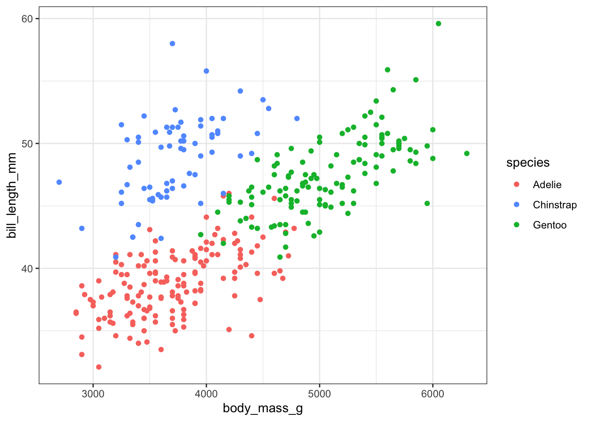
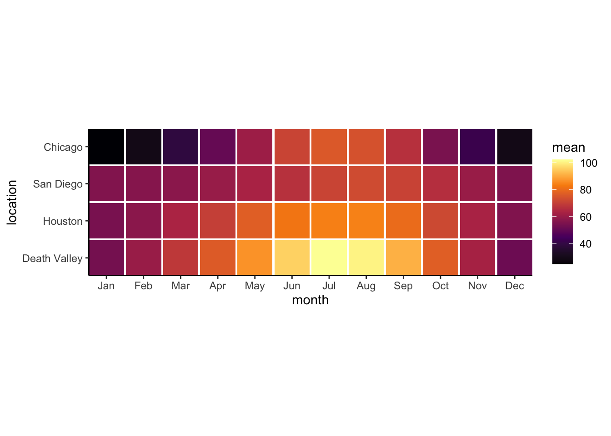

# Run this command to install the required packages.
# You need to do this only once.
install.packages(
c(
"tidyverse", "palmerpenguins", "colorspace",
"shiny", "shinyjs", "RCurl"
)
)Effective Data Visualization with ggplot2
Working with colors
Required packages
Install the required packages:
1. CVD simulations and creating a categorical color palette
We will create a simple scatter plot using the default ggplot hue scale, test for suitability for people with color-vision deficiency (CVD), and then create our own color palette as a replacement.
library(tidyverse)
library(palmerpenguins) # for `penguins` data
p <- ggplot(penguins, aes(body_mass_g, bill_length_mm, color = species)) +
geom_point() +
scale_color_manual(
# default ggplot2 scale_color_hue() colors
values = c("#F8766D", "#619CFF", "#00BA38")
) +
theme_bw()
p
Now check the plot in the CVD simulator. You need to save it as an image file first.
# save the plot as png file
ggsave("penguins.png", p, width = 6, height = 4)
# and check it out in the cvd simulator
colorspace::cvd_emulator()Now create your own categorical color palette using the color chooser app from the colorspace package.
# run interactively to choose colors
colorspace::choose_color()
# modify the plot
p <- ggplot(penguins, aes(body_mass_g, bill_length_mm, color = species)) +
geom_point() +
scale_color_manual(
# your own colors here
values = ...
) +
theme_bw()
p
# save the plot as png file
ggsave("penguins.png", p, width = 6, height = 4)
# and check it out in the cvd simulator
colorspace::cvd_emulator()2. Creating a sequential color palette
Now we will create a sequential color palette. We will use the following plot, which shows mean temperatures in four locales in the US.
# load and prepare data
temps_months <- read_csv("https://wilkelab.org/dataviz_shortcourse/datasets/tempnormals.csv") %>%
group_by(location, month_name) %>%
summarize(mean = mean(temperature)) %>%
mutate(
month = factor(
month_name,
levels = c("Jan", "Feb", "Mar", "Apr", "May", "Jun",
"Jul", "Aug", "Sep", "Oct", "Nov", "Dec")
),
location = factor(
location, levels = c("Death Valley", "Houston", "San Diego", "Chicago")
)
) %>%
select(-month_name)
# and plot
ggplot(temps_months, aes(x = month, y = location, fill = mean)) +
geom_tile(width = 0.95, height = 0.95) +
coord_fixed(expand = FALSE) +
theme_classic() +
scale_fill_gradientn(
# this is the inferno scale, made with viridis::inferno(5)
colours = c("#000004FF", "#56106EFF", "#BB3754FF", "#F98C0AFF", "#FCFFA4FF")
)
Now create your own sequential color palette using the color chooser app from the colorspace package.
# run interactively to choose colors
colorspace::choose_color()
# modify the plot
ggplot(temps_months, aes(x = month, y = location, fill = mean)) +
geom_tile(width = 0.95, height = 0.95) +
coord_fixed(expand = FALSE) +
theme_classic() +
scale_fill_gradientn(
# your own colors here
colours = ...
)